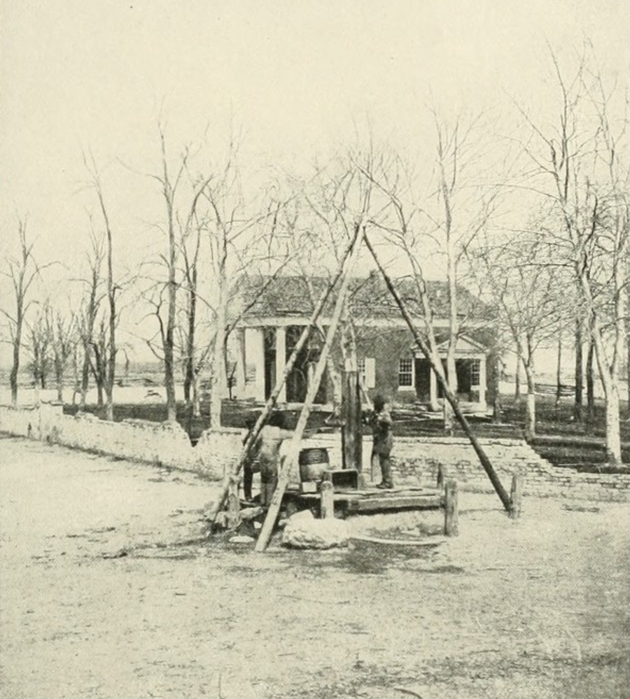
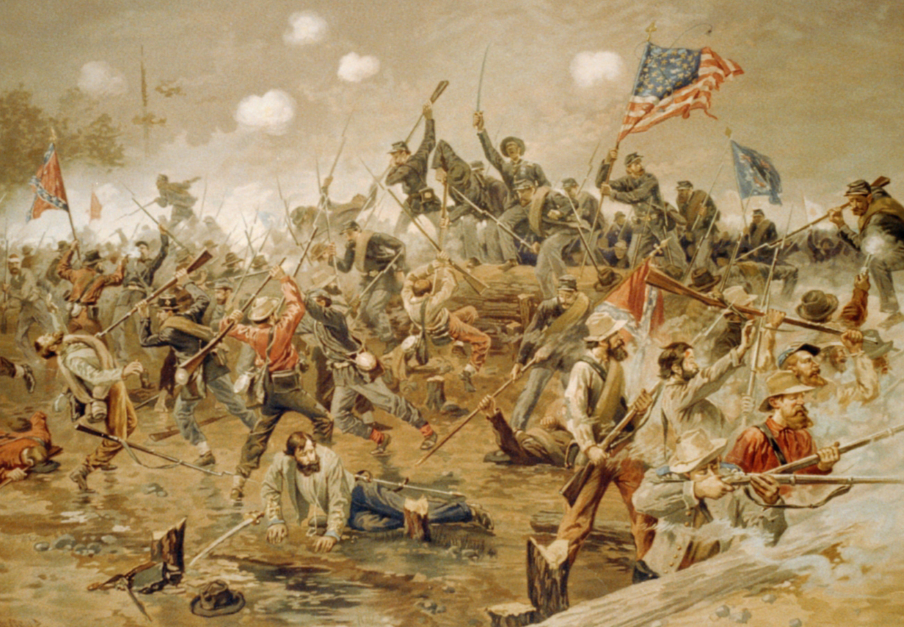

|
The battle of Spotsylvania represented the second phase
of the Overland campaign, which had commenced when Ulysses
S. Grant and Robert E. Lee first took each other's measure
in fighting at the Wilderness on May 5-6, 1864. After
combat ended on May 6, Grant made the crucial decision to
|

The town of Spotsylvania Court House,
as it appeared prior to the battle.
|
press southward, seeking to reach Spotsylvania Court House
ahead of Lee and thereby cut the Confederates off from the
shortest route to Richmond. Hard marching on the night of
May 7 allowed Richard H. Anderson's Confederate corps to
reach Spotsylvania just ahead of Grant's leading units,
which had wasted their advantage of marching on more direct
roads.
Troops from both armies poured onto the field throughout
May 8, and Federal attacks failed to dislodge Confederate
defenders. Lee's soldiers rapidly built a defensive line
notable for its strong field entrenchments. The most
memorable feature of the Confederate line was a large
salient, called the "Mule Shoe," that emerged northward from
near the center of the southern position. Grant looked for
weaknesses on May 9-11, starting heavy action in several
places but gaining no decisive advantage.
At dawn on May 12, a massive Federal assault commanded by
Winfield Scott Hancock smashed through the northern arc of
the Mule Shoe lines, threatening to cut Lee's army in half.
The most desperate fighting of the entire war ensued, as the
two armies struggled to control several hundred yards of
Confederate earthworks, later labeled the "Bloody Angle," at
the northwest corner of the salient. Action continued for
nearly twenty hours and impressed even hardened veterans as
uniquely hellish. "Nothing during the war has equaled the
savage desperation of this struggle..." reported one northern
newspaper correspondent, while a Confederate journalist
wrote that fighting "roared and hissed and dashed over the
bloody angle and along the bristling entrenchments like an
angry sea beating and chafing against a rock bound coast."
As combat raged at the Bloody Angle, Lee's engineers
constructed another line across the base of the Mule Shoe.
By morning of May 13, Grant once again faced a strong
|

The Battle of Spotsylvania,
as painted by Thure De Thulstrup in 1887.
|
Confederate position. Further Federal attacks over the next
five days failed to gain advantage. Repeated assaults at
Spotsylvania taught Union infantrymen a bitter lesson about
the power of defenders sheltered by field entrenchments, and
soldiers on both sides realized that from now on the shovel
would join the musket and the cannon as critical tools on
all their battlefields.
Neither army could claim a clear-cut victory at
Spotsylvania. More than 18,000 Federals and 12,000
Confederates had been killed, wounded, or captured in the
course of reaching a tactical impasse. Grant resumed his
southward movement on May 21, thereby maintaining strategic
momentum and forcing Lee into the unaccustomed position of
reacting to rather than dictating the action.
Source: Joan Waugh, ed., Facts on File Encyclopedia of American
History: Civil War and Reconstruction, 1856 to 1869 (New York: Facts on
File, 2003), 333.
|